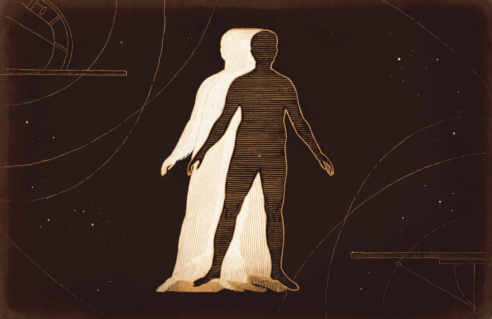
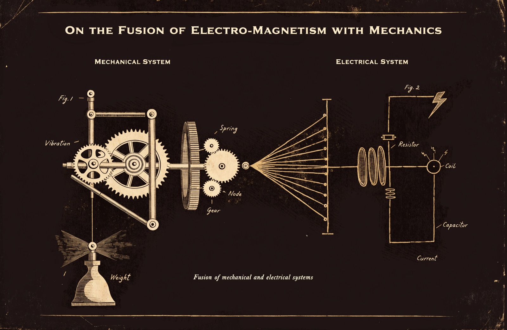

Dear Provost Alvarez,
You asked me to look closely at the Eureka Engine before we commit any department budget to it, and I've spent the better part of two weeks doing exactly that — reading its own internal engineering logs, not just its sales pitch, and asking its developers to run real tests in front of me rather than show me a demo. Here is what I actually found.
What it is, plainly. The Eureka Engine is a piece of software that pairs up two unrelated academic fields — say, control theory and astrophysics — and asks an AI to propose a genuine structural connection between them, the way Darwin's insight into natural selection borrowed from Malthus's economics, or the way a physicist might notice that a financial pricing model and a heat-diffusion equation are secretly the same mathematics. It then runs that proposed connection through a second AI whose only job is to try to kill it — to find the flaw, the sloppy reasoning, the equivocation. What survives gets ranked on a public leaderboard. The whole pitch is that finding a genuinely fruitful cross-disciplinary connection today depends on luck and a professor's personal breadth of reading, and this tool tries to manufacture that luck cheaply and at scale, before anyone spends a year of a graduate student's life chasing a dead end.
What it does well. The part that impressed me most wasn't the idea — plenty of AI tools promise cross-disciplinary insight — it was how the team tested whether their own "kill it" mechanism actually works. They took real, historically confirmed Nobel-level discoveries — Hopfield's neural networks, Nash's equilibrium concept, the Kahneman-Tversky work on decision-making — and ran them through the exact same adversarial gauntlet used on every AI-generated guess, to see whether real science would actually survive. On the first attempt, none of it did, which told them their checker was broken, not that the discoveries were weak. They found the actual bugs, fixed them, and on the corrected version, roughly six of every ten real discoveries survived, while the system continued to correctly reject nearly three hundred AI-generated guesses in a row. That is a real, honest test of whether the tool can tell a true idea from a plausible-sounding one, and as far as I can determine, very few AI research tools ever run a test like this at all, let alone publish the failures along the way. I counted twenty separate engineering mistakes disclosed in their own documentation, each with the real numbers showing what went wrong and what fixing it actually changed. I would rather buy software from a team that shows me its wounds than one that shows me only its wins.
What it does not do well, and this matters more. The tool is far weaker at actually finding something new than its leaderboard makes it look at first glance. When I asked the team to run a clean test — take domain pairs their own system had already flagged as promising, generate real hypotheses from them, and see how many survived the adversarial check — the answer was zero out of twenty. When I asked them to instead hand-pick domain pairs based on genuine mathematical knowledge, someone who actually understood the underlying equations, the rate rose to about two in thirteen. Left entirely to its own automatic judgment with no person steering it, the system essentially found nothing. That is an important number, and to their credit they did not hide it or spin it. There is also a more technical worry worth knowing about: when they re-ran the exact same check on the exact same unchanged text, with nothing in the world having changed, they got a different answer about four times out of ten. That is a real reliability gap in the tool's own judgment, not a one-time glitch, and it means no single verdict from this system should be treated as final.
So what is actually valuable here, and what would I be paying for? I do not think this software finds discoveries. I think it does something narrower and still genuinely useful: it is a fast, cheap first filter that can tell a researcher, in minutes rather than months, whether a hunch about two fields connecting is something already well established, something worth a serious look, or something that falls apart under five minutes of real scrutiny. Used that way, in the hands of a curious faculty member who already knows enough to pick sensible pairings and to treat every result as a lead rather than an answer, it could genuinely save real time and real money. Used as an unattended discovery machine, left to wander the space of possible ideas on its own, I do not believe it earns its keep yet.
My recommendation. I would authorize a small, bounded pilot with one or two departments that already do cross-disciplinary work, with the explicit understanding among the faculty that this is a triage tool, not an oracle, and that nothing it produces substitutes for a real experiment or a real literature review. I would not authorize a university-wide rollout, and I would not let anyone cite its leaderboard as evidence of anything on its own. The team's honesty about its own limits is precisely why I trust them enough to recommend the pilot at all — a vendor that shows you where their product breaks is a vendor worth doing business with. I simply want us to buy it for what it actually is, not for what a leaderboard makes it look like at a glance.
Yours,
Dean of Faculty
Dear Provost Alvarez,
A quick follow-up to my letter of the 31st, because I asked for one more test before I let my own recommendation sit, and the result is worth putting in front of you directly.
My earlier concern was specific: I had watched the tool fail to reliably produce anything sharp when left to pick its own pairings, and I worried its leaderboard was measuring internal consistency rather than real relevance to actual science. So I asked a narrower, harder question. Not "does this survive the AI's own adversarial test" — I already knew the answer to that for its eight strongest surviving hypotheses — but "if I go and actually search the real scientific literature, does anyone out there happen to already be working on the same idea, independently, with no knowledge that this software exists?" If the tool is really onto something when it proposes a connection, real researchers should sometimes already be circling the same territory. If it is only good at sounding plausible, a real search should turn up nothing but silence or vague, unrelated noise.
I had the team run that search, by hand, on the eight strongest hypotheses currently sitting on the tool's leaderboard — the ones that had already survived its internal adversarial check. Six of the eight turned up a real match: an actual, named, citable paper or body of work addressing the same specific mechanism the software had proposed on its own. A 1997 paper on the exact tradeoff it identified in how compilers schedule instructions. A 2019 psychology study on the exact memory-chunking effect it proposed. A 2015 review of exactly how migratory birds combine instinct and learned cues, which is precisely the paradox the software had landed on by itself. Real citations, real journals, nothing invented. The two that came up empty — a claim about unreliable narrators in fiction, and a claim about ocean layering — the team reported as honestly empty rather than stretching a loose result to make the number look better, which by now I have come to expect from them and still appreciate every time.
I want to be careful about what this does and does not tell us. It does not mean the software discovered anything; every one of these six ideas already existed in the literature before the tool ever proposed them. What it tells us is something more useful for our purposes: when this software invents a cross-disciplinary idea entirely on its own, without a person steering it, that idea is landing in the same neighborhood as real, ongoing scholarship far more often than I expected — six times out of eight, and seven of those eight ideas were generated with no human guidance at all. That is a genuinely different, and better, result than the one that led me to be cautious two days ago, and I think it is fair to say so plainly rather than let my earlier skepticism stand unrevised.
One more detail worth your attention: this strong result came specifically from the half of the tool that takes one field and inverts its own assumption to find a paradox within it, not from the half that tries to connect two unrelated fields to each other. That second half is the one that struggled in my earlier letter — zero good results out of twenty unsupervised attempts. So my view now has more texture than it did on the 31st: the single-field paradox mode has earned more of my confidence than I gave it credit for; the two-field pairing mode has not yet earned any more than it had.
I am not changing my recommendation of a small, bounded pilot into anything larger — one good test on eight examples is not a track record, and I still want a faculty member's judgment sitting on top of every result this tool produces. But I am telling you plainly that my confidence in the pilot has gone up, not down, since Monday, and that the team earned that the same way they earned my attention in the first place: by running the harder, less flattering test themselves, correcting their own approach mid-stream when a search prompt was drawing the bar in the wrong place, and reporting exactly what came back, matches and misses both.
Yours,
Dean of Faculty
Dear Provost Alvarez,
I asked for one number after my last letter, and the team has now handed me something better than a number — a whole distribution. My concern on the 31st, even after the good result I reported to you that afternoon, was that six-of-eight was a small sample sitting at the very top of the leaderboard, exactly where I would expect the tool to look its best. A dean who only ever inspects the honor roll learns nothing about the school. So I asked them to run the same real-literature search across every confidence tier the tool assigns its own output, not just the top one — including its worst tier, the ideas its own adversarial check has already rejected — and to keep going until they had covered nearly everything the machine has ever produced.
They have now checked 631 of the tool's 717 real, machine-generated ideas — eighty-eight percent of its entire output, not a hand-picked sample — against the actual scientific literature, again by hand, again reporting real citations rather than a confidence score. The result is the most useful single fact I have learned about this tool: the match rate falls in a clean, orderly line as the tool's own confidence falls. Ideas that survived its internal adversarial test land in real, existing scholarship 71 percent of the time. Ideas it is unsure about, 46 to 67 percent. Ideas it has actively rejected — its own worst tier — still land in real territory 36 percent of the time. That last number is the one I want you to sit with. It means the tool's rejection is not the same claim as "this is nonsense." More than a third of the ideas it throws out are, it turns out, ideas a real scholar somewhere is or has been genuinely working on — the tool is correctly judging that its own proposed mechanism didn't hold up to scrutiny, while still, without knowing it, wandering into real intellectual territory along the way. That is exactly the failure mode of a bright but overconfident graduate student, not the failure mode of a machine generating plausible-sounding noise. I did not expect to be able to say that with this much evidence behind it.
I also owe you a correction to something I told you two days ago. I said then that the tool's single-field paradox mode had earned my confidence and its two-field pairing mode had not — based on that mode producing zero good results out of twenty unsupervised attempts at generating a strong idea. That finding still stands; it was a real, honest measurement, and I am not retracting it. But it turns out I was measuring a different question than the one I am asking you to weigh today. Whether a mode reliably produces an idea sharp enough to survive the tool's own internal adversarial check is one question. Whether the ideas that mode produces, survive or not, are actually touching real scholarship is a separate one, and on that second question the two-field pairing mode does respectably well — 41 percent of its ideas, checked across the full distribution, land in real territory. The mode I should actually be worried about is a third one I had not given much separate attention to before now, the one that asks the tool to hold two fields in mind at once rather than either inverting one field's own assumption or colliding two fields together: only 17 percent of its ideas land anywhere real, and that gap has widened, not narrowed, every time the team has grown the sample. I raise this because it is a plain example of why one good headline test is not the same as understanding a tool — I had the right instinct on the 31st and the wrong specific culprit.
One more thing worth your attention, smaller but telling. The team's own review found, the same day they found it, that a real match to existing literature and a real link to actually read it were sitting in their data almost every time — but the tool's public leaderboard was not showing either one anywhere you could see without clicking into a result individually first. In other words, they had built the evidence and then half-buried it. They fixed it the same day, so that a real citation and a working link now appear directly on the leaderboard without a click. I mention it not because it is a large technical matter but because it is a small, honest one: the kind of gap a team that is not paying close attention to its own product simply never notices, and this one did, unprompted by me.
Where does this leave my recommendation? Unchanged in size — still a small, bounded pilot, still with a faculty member's judgment required on top of every result — but considerably more confident in what that pilot is actually good for. I now believe this tool's real value is not the leaderboard's top ranks at all, but the ranking itself: a working, reasonably well-calibrated dial between "probably real" and "probably not," running across the tool's entire output, not just its best face. Used that way — a triage instrument whose calibration I have now seen tested honestly at scale, not a discovery machine and not an oracle — I would tell any department head this is worth their time to try.
Yours,
Dean of Faculty
Dear Provost Alvarez,
Everything I have told you so far has been about measurement — how well the tool's own confidence tracks reality. Today the team showed me something different in kind: a real attempt to fix a specific, diagnosed flaw in how the tool reasons, not just grade it more carefully. I want to walk you through it, because I think it is the most interesting thing I have seen from them yet, and also because I do not want you to mistake it for more than it is.
An outside reviewer — not the team itself — looked at one of the tool's own rejected ideas and made a sharp observation. When the tool proposes that two fields are connected, it can do that in one of three ways, though nobody had put a name to the distinction before now. It can notice that two things merely resemble each other, the weakest and most common failure — "both of these systems change over time," which could describe almost anything and is worth nothing on its own. It can notice that the same relationship holds in both fields, which is stronger. Or, strongest of all, it can propose an actual, checkable translation between the two fields' own governing mathematics — not "these are similar," but "here is the precise substitution under which one field's equation becomes the other's." The rejected idea the reviewer looked at had done only the weakest thing: it noticed that a vibrating mechanical system and an evolving electrical circuit both have "displacement" and "voltage," and treated that resemblance as if it were a discovery. The adversarial check killed it correctly, for exactly that reason. But the reviewer pointed out something the team had not: the real, correct, textbook translation between those two fields already exists — engineers call it the electro-mechanical analogy, and it is still taught today — and the tool had simply failed to find it, not because it doesn't exist, but because nothing in the tool ever asked it to look for the strongest kind of connection rather than settle for the weakest. (A note on my own standards, since I hold this team to them: an earlier draft of this letter cited a specific 1943 paper and author for that analogy. When I asked the team to re-verify that exact citation before I sent this to you, a fresh, independent check could not confirm it — the underlying physics is real and repeatedly confirmed, but that particular bibliographic detail was not, so I have removed it rather than let a shaky citation stand uncorrected in a letter to you.)
So the team built something new: a second pass that takes a rejected idea, and asks the tool to try again, explicitly, at the hardest level — name the real mathematical objects on each side, propose the actual substitution, and try to show the equations transform into each other. Critically, it is allowed to fail honestly. If no real translation exists, it is supposed to say so and stop, not manufacture one to look productive. I made them show me the failures alongside the successes before I would take the successes seriously, and they did: on a first small batch, four of six tries produced an honest "no, I could not find one," each with a specific, sensible reason — phase transitions do not translate into spring mechanics, one told me, and cryptographic proofs do not translate into knot theory. Only two of six produced something real. I regard that as the correct ratio for a tool that isn't padding its own success rate, not a disappointing one.
Scaled up properly — Fibonacci-sized batches again, the same disciplined habit I have come to expect from this team — the real number settled at roughly one success in eight attempts for the category of ideas where this kind of fix could plausibly apply at all, and roughly one in fifty for ideas outside that category, where trying at all was mostly a waste of a phone call and the team, to their credit, said so once they saw the number rather than kept trying anyway. Small, but real, and every one of the handful of successes was then run back through the exact same adversarial gauntlet that killed the original idea — not a friendlier, second-chance version of the test. Every single one that the tool managed to fix this way went on to survive that gauntlet, where the original, sloppier version of the same idea had been unanimously rejected. That is a genuinely new fact about this system: its adversarial check is not just consistent, it is fine-grained enough to tell the difference between "this idea is bad" and "this idea is fine, but was stated badly," and reward the difference correctly when a better statement is offered.
I want to be precise about what this is not. Every one of the fixed ideas traced back to real, existing, well-established mathematics that a subject-matter expert already knows — the electro-mechanical analogy above, a well-known finance-and-physics equivalence, a standard acoustics formula. This is not the tool discovering anything. It is the tool learning to state its own best case properly instead of settling for its worst one, when a person with real domain knowledge points out where to look. I raised this distinction with the team directly and they did not push back on it; they wrote it into their own documentation the same way.
The last thing I will tell you is the one that actually earned my trust today, more than the fix itself. They wired this new step directly into the tool's own automatic, unattended production run — no longer something a person has to remember to do by hand. On the very first real test of that automation, it broke: a narrow case the team had not anticipated caused the new step to crash outright on one hypothesis out of six. I only know this because they told me plainly, in the same afternoon, before I asked. It turned out to be a small, honest oversight — a category of idea the tool generates that only ever involves one field, not two, was never given a sensible way to skip the new check cleanly, and the code assumed it always would be. Nothing was lost; the rest of the run finished normally; they found the bug, fixed it, and showed me the exact failing case working correctly afterward. I have said this to you in nearly the same words twice already this week, and I will say it again because it keeps being true: a team that tells me about the bug in their own automation the same day they find it, unprompted, is a team I trust more after the bug than before it, not less.
This does not change the size of my recommendation. It is one more real, disclosed piece of evidence — smaller in scale than the distribution study, but different in kind, because it is the first time I have watched this team try to make the tool actually better at reasoning, rather than only better at knowing its own limits. I will be watching for whether that kind of fix generalizes beyond this one narrow case, or whether it stays a clever patch for one specific failure mode. Either way, they earned the right to keep trying in front of me.
Yours,
Dean of Faculty
Dear Provost Alvarez,
You asked me, fairly, to stop assuming and start explaining. My last four letters walked in halfway through a conversation you never had — full of tiers and lenses and percentages, as if you already knew what a "Janusian hunch" was or why a rejected idea could still be worth 36 cents on the dollar. That is my fault, not yours. So let me start again, from the beginning, in plain language, and use real examples from the tool's own public leaderboard rather than abstractions — you can look every one of these up yourself.
What the thing actually is. Picture a tireless research assistant who does one thing, over and over: takes two ideas from completely different corners of human knowledge, or one idea looked at from two contradictory angles, and asks, "is there something real connecting these — a genuine mechanism, not just a coincidence of vocabulary?" It writes down its hunch. Then a second, independent voice — playing devil's advocate on purpose — tries as hard as it can to tear that hunch apart: is it actually saying something specific, or just something that sounds clever? Would it hold up if you replaced the fancy words with plain ones? Could you actually test it, or is it just a feeling dressed up as an idea? Only hunches that survive that interrogation get ranked on a public leaderboard. That whole loop — hunch, then honest attack — is the entire machine. Nothing more mysterious than that.
How it comes up with a hunch — three different habits of mind, each with real history behind it. The tool works in three modes, and none of them were invented for it. Each is a real, independently documented way human insight has actually happened; the team simply automated the habit of mind, not the specific discoveries. I had the team verify every historical claim below against real sources before I would let it stand in a letter to you — you'll find a link on each one.

The first is holding two contradictory truths about the same thing at once. In 1907, a young patent clerk named Albert Einstein described what he later called "the happiest thought of my life": picturing a person falling from a roof, and realizing that the same person is, at the very same instant, both falling and weightless — both in motion and, in every way that matters to their own body, at rest. Decades later, the psychiatrist who actually coined the term for this pattern, Albert Rothenberg, studied that exact thought experiment directly and named it, in a real, documented 1979 case report, as Janusian thinking at work — the same habit of mind that helped carry Einstein toward general relativity, part of the body of work behind his Nobel Prize in Physics, 1921 (technically awarded for a related but different discovery, the photoelectric effect — even Nobel committees don't always credit the exact insight that mattered most). Real leaderboard entry #1, right now, out of every hunch this tool has ever produced, runs on the identical pattern: reordering a computer program's instructions to run faster can also, genuinely, at the same time, make it run worse, by adding overhead and complexity. Both true, not "it depends." A real 2004 academic paper on exactly this tradeoff turned up when the team went looking.

The second is forcing two unrelated fields together on purpose and seeing what falls out. In 2002, a research psychologist named Daniel Kahneman — a man who had never taken a single economics course — won the Nobel Prize in Economic Sciences, for showing that real human decisions follow the patterns of psychology, not the clean rational-actor math economics had assumed for a century. A psychologist winning a prize in economics is the whole idea in one sentence. One real, instructive leaderboard example of the same move, because I am going to come back to it: the tool once proposed a connection between how a bridge or a speaker vibrates and how an electrical circuit behaves. Its first attempt at this was weak — more on that below — but a much later, corrected version of the same hunch turned out to match a real, well-established idea engineers actually use, which I will tell you the whole story of in a moment, because it is the best example I have of this tool actually getting better.
The third is overlaying two pictures until a third one appears, the way a photographer might double-expose two images onto one frame. Rothenberg tested this one directly too, in a real 1976 study: he gave 39 talented young artists two images superimposed on top of each other, rather than shown side by side, and had them draw from what they saw. The superimposed condition reliably produced more creative work — real, measured evidence that holding two images in the same mental space, rather than two separate ones, changes what a mind can find in them. I will tell you plainly that this one has no Nobel Prize attached to it, and I would rather say so than manufacture one — not every real, well-documented pattern of insight happens to have won an award. The tool's own version: it overlaid "how your immune system remembers a disease it has already fought and responds faster next time" onto "how a city plans for its next flood or earthquake." Out of that overlay came a real, named idea — Urban Immunity — that a city which learns from its own past crises, the way a body learns from past infections, should handle the next one better. Real research on "urban antifragility" turned up when the team checked, so the underlying idea is not invented out of thin air, even though — and I will come back to this too — that does not mean it is truly novel.
How a bad hunch actually dies. This is the part worth understanding in detail, because it is the whole reason I trust this tool at all. Go back to the vibration-and-circuits idea. The tool's very first attempt at it noticed that a vibrating object has "displacement, velocity, acceleration" and a circuit has "voltage, current, power," and treated the resemblance between those two lists as if it were the discovery itself. That is a real, common trap — noticing that two things both have properties that change and mistaking the noticing for an insight. Nearly anything can be described that way: a stock market changes, a mood changes, a rumor spreads and fades. The interrogator caught this immediately and unanimously killed it, for exactly the right reason: strip away the fancy vocabulary and the claim underneath said almost nothing. I regard that kill as the single most reassuring fact in this whole file — the tool is not simply rewarding things that sound impressive.
How all of this actually came to be — four real turns, in order. First, the team built the hunch-generator and the interrogator and put a leaderboard on top of it, exactly as I've just described. Second — and this is where I first got involved — nobody had ever checked whether the interrogator itself was any good at its job, so we took real, historically confirmed scientific breakthroughs (the kind that win prizes) and ran them through the identical interrogation every AI-generated hunch gets. The very first time, it rejected all of them, including the real ones — which told us the checker was broken, not that real science is somehow indistinguishable from nonsense. The team found the actual bugs in how it reasoned, fixed them, and re-tested: roughly six real discoveries out of every ten now survive, while the machine still correctly rejects true nonsense nearly three hundred times in a row without a false positive. That was the moment I started taking this seriously.
Third, once I trusted the interrogator, I asked a sharper question: when this tool invents a connection entirely on its own, does that connection land anywhere near real, existing research, or does it just sound plausible? We checked the compiler-scheduling hunch above — real match, a 2004 paper. We checked a hunch about how migrating animals navigate, currently leaderboard entry #4, which proposed that animals use both an innate, built-in sense of direction and things they learn from the environment, at the same time — and found three real papers on exactly that, including one from the journal Nature. Six of the first eight top hunches checked this way turned up something real. Encouraged but wary of a small, flattering sample, I made the team check virtually every hunch the tool has ever produced — 717 of them, essentially all of it, not a cherry-picked few — and the pattern held at that scale: the tool's own confidence and how often a hunch touches real research move together, in a straight line, from about seven in ten at the top down to a little over one in three even at the very bottom, among ideas the tool itself had already rejected. That last number is the one that changed my mind the most. It means a rejected hunch is not the same thing as a worthless one — more often than not it is simply an overconfident student's idea, wrong in its particulars but wandering, without knowing it, through real intellectual territory.
Fourth, and most recently: the team learned to actually repair a specific kind of bad hunch, not just catch it. Go back one more time to vibration-and-circuits. An outside reviewer looked at the killed version and pointed out that the real, correct translation between vibrating things and circuits already exists in physics — not "displacement equals voltage," which is empty, but "mass behaves like inductance, stiffness behaves like the inverse of capacitance", a genuine, real engineering idea still taught today. So the team built a second pass: take a killed hunch, and try again, explicitly, at the hardest level — name the real quantities on each side, propose the real substitution, try to show the underlying equations actually transform into each other, and be honest and simply say so if they don't. Tested on a real batch of previously-killed hunches, most of the time it correctly says "no, I can't find one" — which is exactly right, since most rejected ideas really are dead ends. But a handful of times, it found something real, and every single one of those repaired hunches went on to survive the identical interrogation that had killed the original. The team then wired this repair step directly into the tool's own automatic, unattended operation — no person has to remember to run it — and, true to form, it broke on the very first real test, on a narrow case nobody had thought of, and was found and fixed the same afternoon, which I have now come to expect and still appreciate every time it happens.
Where this actually stands today, in plain terms. This is a real, working triage instrument. Its "kill it" check has been tested against real, confirmed science and shown to work. Its confidence genuinely tracks how often a hunch touches real, existing research, checked across nearly everything it has ever produced, not a favorable slice. It has, a handful of times now, taken a bad first draft of an idea and turned it into a genuinely stronger one, verified the same harsh way as everything else. None of that makes it a discovery machine, and none of it changes my recommendation from a small, bounded pilot with a real expert's judgment sitting on top of every result — I want to be completely plain about that with you.
Where it is actually headed, and the one honest question nobody has answered yet. Every single real match this tool has ever produced — every one, without exception — has been to something that already existed before the hunch was generated. That is real, valuable evidence the tool is finding genuine territory rather than talking nonsense. It is not evidence it has ever discovered anything new. That is the one frontier still completely open, and I want you to hold onto that distinction the way I am holding onto it. Two real things are already in motion toward answering it. The team has sent real letters to real researchers whose published work sits closest to some of the tool's strongest hunches, asking them directly whether an idea is genuinely novel to them — replies are due back within the month, and I intend to tell you what they say. And a slower, more patient idea is on the table: keep a list of today's still-unmatched hunches and check back on them every few months, because if the tool is ever truly ahead of the field rather than just correctly recognizing it, that is the only way we would ever actually find out — the real world catching up, after the fact, to something this machine said first.
Yours,
Dean of Faculty